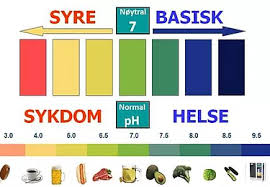
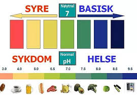

Buffer, kjemisk «støtpute», det vil si en løsning med en surhetsgrad som ikke endres vesentlig ved tilsetning
av mindre mengder syre eller base. Bufferløsninger består vanligvis av en svak syre og en sterkere base (syrens salt).
I blodet finnes flere buffere. Vanligvis holdes surhetsgraden i blodet konstant ved respirasjon og ved et samspill
mellom nyrer, lever og blodets buffere.
 
